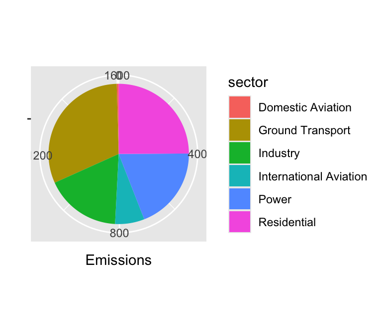
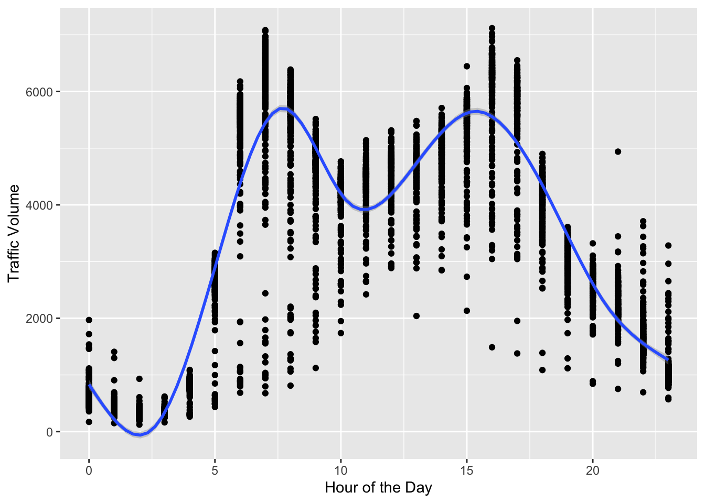
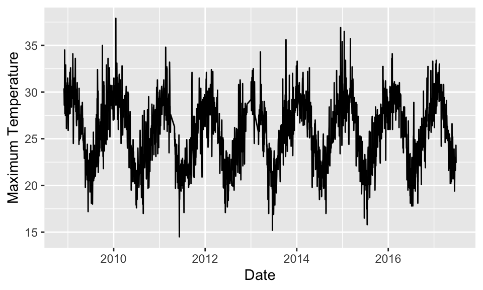
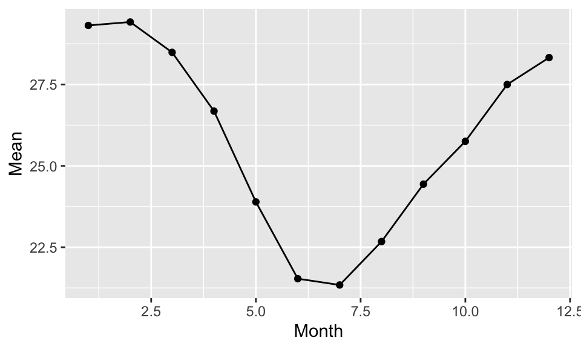
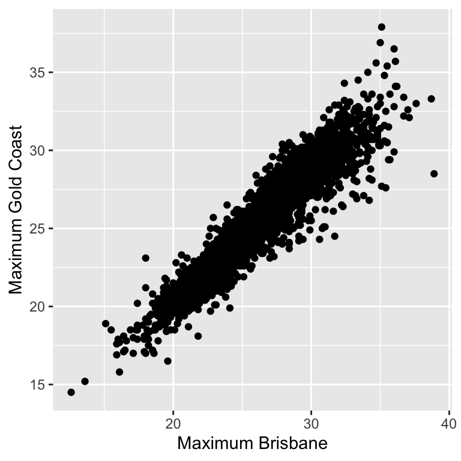

library(dplyr)
library(lubridate)
library(ggplot2)
library(patchwork)
library(tidyr)MA22019 2025 - Solutions for Quiz 4
Mise en place
Quiz
Solutions
Overview
Exercises 1-3 help you with revising the techniques covered in Week 3. There are no tutorial and homework questions as Coursework 1 will be released at 15:00 on Friday, 21 February 2025.
Before starting the questions, make sure to load the different packages we considered so far:
Exercise 1 - CO\(_2\) emissions across the globe
The file “CO2 Emissions.csv” provides the recorded daily CO\(_2\) emissions across six different sectors between 1 January 2019 and 31 May 2023 for 11 countries, the EU, the rest of the world (ROW) and across and the planet (WORLD). Enter your answers to the questions below via the quiz on Moodle.
- Which two countries recorded the highest total CO\(_2\) emissions across all sectors for the considered time window?
We start by loading the data:
CO2 <- read.csv( "data/CO2 Emissions.csv", header=TRUE )We sum up all the observed values separately for each country using functions from the dplyr package:
CO2 %>%
group_by( country ) %>%
summarize( Total=sum( emissions) ) %>%
arrange( desc(Total) ) %>%
slice_head( n=5 )# A tibble: 5 × 2
country Total
<chr> <dbl>
1 WORLD 155540.
2 China 48003.
3 ROW 46393.
4 US 21632.
5 EU27 & UK 14004.We find that China and the United States had the most emissions between 1 January 2019 and 31 May 2023 (is this a surprise?).
- Create a pie chart that illustrates the total emissions per sector for the UK between 1 January 2019 and 31 May 2023. Which sector of the UK economy produced the most CO\(_2\) emissions over the observation period?
We first extract the observations for the UK and then calculate the total number of emissions for each sector
CO2_UK <- CO2 %>%
filter( country=="UK" ) %>%
group_by( sector ) %>%
summarize( Total=sum(emissions) )
CO2_UK# A tibble: 6 × 2
sector Total
<chr> <dbl>
1 Domestic Aviation 7.29
2 Ground Transport 502.
3 Industry 280.
4 International Aviation 109.
5 Power 308.
6 Residential 400. We can now adapt the code from the lecture notes for creating the pie chart:
ggplot( CO2_UK, aes( x="", y=Total, fill=sector ) ) +
geom_col() + coord_polar( theta="y" ) +
labs( x="", y="Emissions" )
The pie chart shows that the sector with the most emissions was ground transport which accounted for about 30% of the recorded CO\(_2\) emissions.
Exercise 2 - Traffic between Minneapolis and St Paul
The file “Traffic Minnesota.csv” contains hourly data on the traffic volume for westbound I-94, a major interstate highway in the US that connects Minneapolis and Saint Paul, Minnesota. The data was collected by the Minnesota Department of Transportation (MnDOT) from 2012 to 2018 at a station roughly midway between the two cities.
The variables are
traffic_volume: Hourly I-94 reported westbound traffic volume.
holiday: Indicates whether the date is a US national holiday or a regional holiday (such as the Minnesota State Fair).
date_time: Shows the hour of the data collected in local CST time.
- Use the function dmy_hm() in the lubridate R package to convert the variable date_time to its correct type. Apply the function weekdays() to extract the day of the week and store this information as a separate variable within the data frame.
We start by loading the data.
Traffic <- read.csv( "data/Traffic Minnesota.csv" )We then use the functions dmy_hm() (from the lubridate package) and weekdays() as required:
Traffic <- Traffic %>% mutate( date_time = dmy_hm(date_time) )
Traffic <- Traffic %>% mutate( Weekday = weekdays(date_time) )Traffic <- Traffic %>% distinct(date_time, .keep_all = TRUE)Traffic <- Traffic %>%
group_by( Date = date(date_time) ) %>%
mutate( holiday = holiday[1] )filter( Traffic, holiday != "None" )# A tibble: 1,203 × 8
# Groups: Date [53]
traffic_volume holiday temp rain_1h snow_1h date_time Weekday
<int> <chr> <dbl> <dbl> <dbl> <dttm> <chr>
1 455 Columbus Day 273. 0 0 2012-10-08 00:00:00 Monday
2 336 Columbus Day 273. 0 0 2012-10-08 01:00:00 Monday
3 265 Columbus Day 272. 0 0 2012-10-08 02:00:00 Monday
4 314 Columbus Day 271. 0 0 2012-10-08 03:00:00 Monday
5 779 Columbus Day 271. 0 0 2012-10-08 04:00:00 Monday
6 2571 Columbus Day 270. 0 0 2012-10-08 05:00:00 Monday
7 5563 Columbus Day 270. 0 0 2012-10-08 06:00:00 Monday
8 6676 Columbus Day 270. 0 0 2012-10-08 07:00:00 Monday
9 5966 Columbus Day 271. 0 0 2012-10-08 08:00:00 Monday
10 4832 Columbus Day 274. 0 0 2012-10-08 09:00:00 Monday
# ℹ 1,193 more rows
# ℹ 1 more variable: Date <date>Answer the following two questions using the data and submit your solutions via the Moodle quiz on Moodle:
- What is the average traffic volume on a Saturday?
We can use functions from the dplyr R package here:.
Traffic %>%
filter( Weekday=="Saturday" ) %>%
summarize( Average = mean(traffic_volume) )# A tibble: 266 × 2
Date Average
<date> <dbl>
1 2012-10-06 3257.
2 2012-10-13 2938.
3 2012-10-20 2891.
4 2012-10-27 3065.
5 2012-11-03 2810.
6 2012-11-10 2808.
7 2012-11-17 2779.
8 2012-11-24 2525.
9 2012-12-01 2943.
10 2012-12-08 2797.
# ℹ 256 more rows(ii) What is the difference in average traffic volume between work days and the weekend/ a holiday?The first step is to create a variable which represents whether an observation comes from Monday-Friday or whether it’s the weekend / a holiday.
Traffic <- Traffic %>%
mutate( WorkDay = case_when( Weekday == "Saturday" ~ "Weekend",
Weekday == "Sunday" ~ "Weekend",
holiday != "None" ~ "Weekend",
.default = "Workday" ) )Next, we calculate the average traffic volume for the two categories:
AverageTraffic <- Traffic %>%
group_by( WorkDay ) %>%
summarise( Mean = mean(traffic_volume) )Finally, we calculate the difference in the averages:
AverageTraffic$Mean[1] - AverageTraffic$Mean[2][1] -982.8939- Create a plot which visualizes how the traffic volume changes throughout the day on Mondays.
We can extract the hour using the function hour() and combine it with functions from dplyr and ggplot we are familiar with:
Traffic %>%
filter( Weekday == "Monday" ) %>%
ggplot( aes(x=hour(date_time), y=traffic_volume) ) +
geom_point() + geom_smooth() +
labs( x="Hour of the Day", y="Traffic Volume" )`geom_smooth()` using method = 'gam' and formula = 'y ~ s(x, bs = "cs")'
Exercise 3 - Weather in Brisbane and Gold Coast
The file “BrisbaneGoldCoast.csv” contains daily weather measurements for Brisbane and Gold Coast in Australia.
- Explore how the daily maximum temperature for Gold Coast varies throughout the year. Use the results from your analysis to answer the Moodle quiz.
Let’s load the data:
BrisbaneGoldCoast <- read.csv("data/BrisbaneGoldCoast.csv")As we want to plot values over time, the first step is to convert the variable Date to its correct type:
BrisbaneGoldCoast <- BrisbaneGoldCoast %>%
mutate( Date = as_date( Date, format="%d/%m/%Y" ) )For this analysis we only consider Gold Coast, and we thus we select the relevant observations:
GoldCoast <- filter( BrisbaneGoldCoast, Location=="GoldCoast" )To explore variation throughout the year, we can create a line plot of the data:
ggplot( GoldCoast, aes( x=Date, y=MaxTemp ) ) +
geom_line( ) + labs( x="Date", y="Maximum Temperature" )
The plot shows that Gold Coast observes a seasonal pattern in the maximum daily temperature, with the highest temperatures recorded around December/January.
We can also study the average daily maximum temperature for each month to illustrate this further:
GoldCoast %>%
group_by( Month=month(Date) ) %>%
summarise( Mean=mean(MaxTemp, na.rm=TRUE) ) %>%
ggplot( aes(x=Month, y=Mean) ) + geom_line() + geom_point()
- Create a scatter plot of the daily maximum temperature for Brisbane and Gold Coast. What do you conclude?
To explore the dependence between the sites via a scatter plot, we have to change the data structure using the tidyr package. Specifically, we want the measurements for Brisbane and Gold Coast in separate columns, which we achieve using
BGC_wide <- pivot_wider( BrisbaneGoldCoast, names_from=Location,
values_from=MaxTemp:WindGustSpeed )We can now create scatter plots to analyse the dependence:
ggplot( BGC_wide, aes(x=MaxTemp_Brisbane, y=MaxTemp_GoldCoast) ) +
geom_point() +
labs( x="Maximum Brisbane", y="Maximum Gold Coast" )Warning: Removed 20 rows containing missing values or values outside the scale range
(`geom_point()`).
The plot shows that the daily maximum temperatures for Brisbane and Gold Coast are quite similar. This strong dependence reflects their spatial proximity.